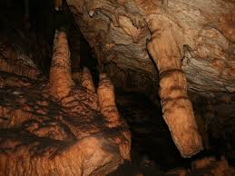
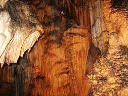

Doğal oluşumları ile biyolojik özelliklere sahip mağarada sarkıt ve dikitler bulunmaktadır. Yaklaşık 4 metre sürünülerek girilebilen ağız kısmından sonra mağara birden büyük bir galeri halini almaktadır.bilim insanlarının yaptığı araştırmalar sonucunda farklı böcek ve sünger türlerine rastlanmıştır


 "Aydın"a dönmek için basın
"Aydın"a dönmek için basın